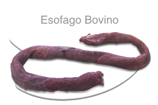

El esófago es un corredor músculo membranoso que conecta la faringe al rumen..1 Hay dos capas de músculo en el esófago: la circular y longitudinal. Cuándo estas capas de músculo se relajan y se contraen, ayudan al movimiento de los bolos de alimento. La perístalsis consiste en la relajación seguida por la contracción. La peristálsis tiene como resultado el progreso hacia adelante del alimento del segmento contraído al segmento relajado. El estiramiento de la pared del esófago por el bolo alimenticio, es la causa del peristaltismo
